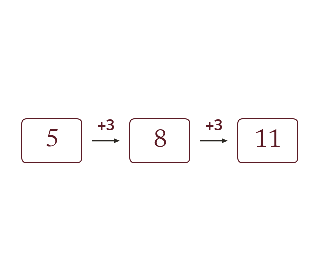
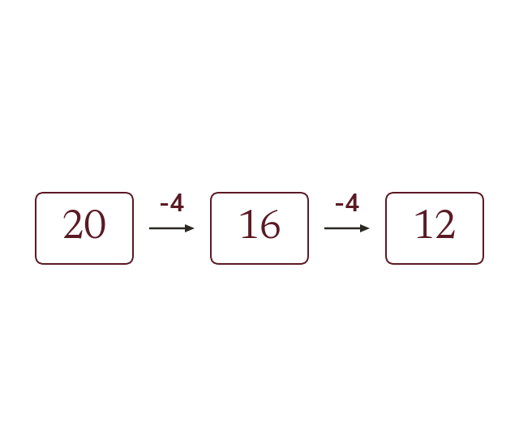
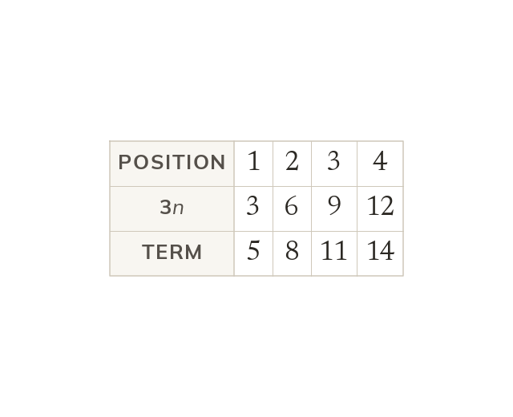
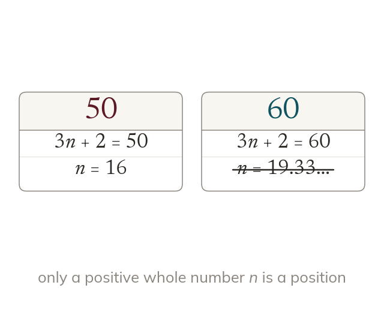

Topic 8.14 · Sequences and Double Brackets · Lesson 3 of 6
Arithmetic Sequences and nth Term
An arithmetic sequence grows by the same step every time, like the seats in each row of a theatre. Its nth term jumps straight to row 100, or shows that a number cannot be in it at all.
By the end you’ll know…
An arithmetic sequence goes up or down by the same amount each time, its common difference.
The common difference is found by subtracting any term from the one after it.
The nth term takes the form dn + c, where d is the common difference.
c is found by working back one step from the first term, so c = first term - d.
A number is a term of the sequence only if solving dn + c for it gives a positive whole number n.
By the end you can
G5Find the next terms and the common difference of an arithmetic sequence.
G5Find and use the nth term rule of an arithmetic sequence, including to test whether a number is a term.
Work down the page at your own pace. Write every answer in your book first, then click to check it.
01
Do Now
About 5 minutes
1
Work out -4 × 6.
-24
2
Work out -30 ÷ -5.
6
3
Find the value of 5n - 2 when n = 7.
33
Remember these?
LAST LESSONWrite the first five cube numbers.
1, 8, 27, 64, 125
LAST WEEKSales were 40, 45, 43, 50 and 56 over five months. Describe the trend.
Rising overall, with a dip in month 3.
LAST TERMThree angles of a quadrilateral are 85°, 110° and 70°. Find the fourth.
360 - 265 = 95°
LAST YEARIncrease £60 by 15%.
10% = £6 5% = £3 £60 + £9 = £69
02
Learn
Read each card, then follow the worked examples one step at a time.

The same step each time
An arithmetic sequence changes by the same amount each time. This common difference is the next term minus the term before.
An arithmetic sequence goes up or down by the same amount each time, called the common difference. It is found by subtracting any term from the one after it.

Going down
A decreasing sequence has a negative common difference. For 20, 16, 12 it is 16 - 20 = -4, not 4.
WORKED EXAMPLE A
Find the common difference and the next two terms of 7, 11, 15, 19.
Find the difference11 - 7 = 4
Add 419 + 4 = 23
Add 4 again23 + 4 = 27
Common difference4
Next two terms23, 27
WORKED EXAMPLE B
Find the common difference and the next two terms of 13, 10, 7, 4.
Find the difference10 - 13 = -3
Subtract 34 - 3 = 1
Subtract 3 again1 - 3 = -2
Common difference-3
Next two terms1, -2
YOUR TURN · a
Find the common difference and the next two terms of 2, 9, 16, 23.
7, then 30 and 37
YOUR TURN · b
Find the missing terms: 5, ?, ?, 20.
20 - 5 = 15 over 3 steps, so the difference is 5: 10 and 15.
03
Check your understanding
Pick an answer. If it's wrong, the feedback tells you which mistake it was.
What is the common difference of 30, 23, 16, 9?
Not quite. Each term goes down by 7, so the difference is −7.
Yes.23 − 30 = −7, and it stays −7 each step.
Not quite.30 is the first term. The difference is 23 − 30 = −7.
Not quite.9 is a term. The difference is the change each step: −7.
How is the common difference of an arithmetic sequence found?
Yes. Subtract each term from the next one: second − first.
Not quite. Do next term minus the term before, or the sign flips.
Not quite. The first term is where it starts, not the size of each step.
Not quite. Arithmetic sequences add a fixed amount, so subtract, don't divide.
Which sequence has common difference -5?
Not quite.−12 to −7 goes up 5, so that difference is +5.
Not quite. These go up 5, so the difference is +5, not −5.
Yes.3, −2, −7, −12 goes down 5 each time: −5.
Not quite. These don't change by the same amount: −5, −10, −20.
04
Practise
mark as you go
Checkpoint. Find the common difference and the next three terms of 8, 5.5, 3, 0.5.Show your teacher before you go on
1
Find the common difference and the next two terms of 4, 10, 16, 22.
Difference: 10 - 4 = 6 Next two: 28, 34
2
Find the common difference and the next two terms of 50, 43, 36, 29.
Difference: 43 - 50 = -7 Next two: 22, 15
3
Find the common difference and the next two terms of 1.5, 3, 4.5, 6.
Read each card, then follow the worked examples one step at a time.

The nth term is dn + c
The nth term of an arithmetic sequence is dn + c. d is the common difference. c = first term − d: one step back from the first.
The nth term of an arithmetic sequence is dn + c, where d is the common difference. The number c is found by stepping back one term from the first: c = first term - d.

Is it a term?
Solve dn + c = the number. It is a term only if n is a positive whole number. For 3n + 2, 60 is not a term.
A number is in the sequence only if solving dn + c = the number gives a positive whole number n. So 3n + 2 = 50 gives n = 16, but 3n + 2 = 60 gives n = 19.33..., so 60 is not a term.
WORKED EXAMPLE C
Find the nth term of 5, 9, 13, 17.
The difference is 4, so the rule starts 4n
Step back one termc = 5 - 4
= 1
nth term4n + 1
WORKED EXAMPLE D
Is 150 a term of 7, 13, 19, 25?
Write the nth term6n + 1
Set it equal to 1506n + 1 = 150
Subtract 1 from both sides6n = 149
Divide by 6n = 24.83...
Conclusionn is not whole, so 150 is not a term
YOUR TURN · c
Find the nth term of 20, 17, 14, 11.
Difference -3; c = 20 + 3 = 23; nth term 23 - 3n.
YOUR TURN · d
Is 64 a term of the sequence with nth term 5n + 4?
5n + 4 = 64 gives n = 12, so yes: the 12th term.
06
Check your understanding
Pick an answer. If it's wrong, the feedback tells you which mistake it was.
What is the nth term of 6, 13, 20, 27?
Not quite. The first term isn't c. c = 6 − 7 = −1.
Not quite. Multiply n by the difference: 7n, then add c.
Yes. Difference 7 gives 7n; 7 × 1 = 7, and 7 − 1 = 6, so 7n − 1.
Not quite. The difference, 7, goes with n: 7n − 1.
Is 45 a term of the sequence with nth term 4n + 3?
Not quite. Being odd isn't enough. Solve 4n + 3 = 45.
Not quite. Term positions are whole numbers, so 10.5 means no.
Not quite.45 is the term, not n. Solve 4n + 3 = 45.
Yes.4n = 42, so n = 10.5, which isn't a whole number: no.
For the nth term dn + c, how is c found?
Yes. Step back one place from the first term: c = first term − d.
Not quite. The first term is d + c. Take d off to find c.
Not quite. Step backwards, so subtract d: c = first term − d.
Not quite.d is the difference. c is what's left: first term − d.
07
Practise
mark as you go
Checkpoint. A sequence begins 31, 27, 23, 19. Find its nth term, and decide whether -1 is a term.Show your teacher before you go on
1
Find the nth term of 6, 11, 16, 21.
Difference 5; c = 6 - 5 = 1 nth term: 5n + 1
2
Find the nth term of 3, 10, 17, 24.
Difference 7; c = 3 - 7 = -4 nth term: 7n - 4
3
Find the nth term of 40, 34, 28, 22.
Difference -6; c = 40 + 6 = 46 nth term: 46 - 6n
4
Is 100 a term of the sequence with nth term 4n + 3?
4n + 3 = 100, so 4n = 97 n = 24.25, not a whole number: no
5
Is 136 a term of 3, 10, 17, 24, ...?
7n - 4 = 136, so 7n = 140 n = 20: yes, the 20th term
EXT
Two sequences have nth terms 5n + 1 and 3n + 9. Which number is in the same position in both?
5n + 1 = 3n + 9, so 2n = 8 and n = 4 The 4th term of both: 21
08
Exit ticket
On paper, on your own, then check
1
How do you decide whether a number is a term of the sequence with nth term dn + c?
Solve dn + c = the number; it is a term only if n is a positive whole number.
2
Find the common difference and the next two terms of 4, 10, 16, 22.
6, then 28 and 34
3
Find the nth term of 9, 14, 19, 24, and use it to find the 50th term.
5n + 4; 5 × 50 + 4 = 254
Finished? Next lesson: 8.14.4 Factorising and Expanding.
Practise more
After the lesson, or whenever you want more
Dr Frost
Log in, then search for a code to practise that skill.
203iDetermine the next term(s) in an arithmetic sequence.
205bDetermine the nth term formula for an ascending arithmetic sequence.
206cDetermine whether a number is a term in an arithmetic sequence using algebra.